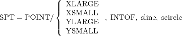
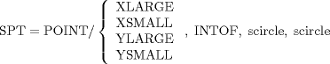
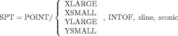
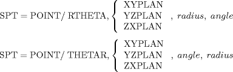

| 3.3. The Point (POINT) Definitions | ||
|---|---|---|
 | Chapter 3. Geometric Statements in APT |  |
| 3.3. The Point (POINT) Definitions | ||
|---|---|---|
| | Chapter 3. Geometric Statements in APT | |
A point is a unique position in space and can be defined in several ways.
SPT = POINT/ xcoord, ycoord, zcoord
SPT = POINT/ xcoord, ycoord
SPT = POINT/ INTOF, sline, sline

P1 = POINT/ YSMALL, INTOF, L1, C3 P2 = POINT/ YLARGE, INTOF, L1, C3 P3 = POINT/ YSMALL, INTOF, L1, C1 P4 = POINT/ YLARGE, INTOF, L1, C1 P5 = POINT/ XLARGE, INTOF, L2, C1 P6 = POINT/ XSMALL, INTOF, L2, C1 P7 = POINT/ XLARGE, INTOF, L2, C2 P8 = POINT/ XSMALL, INTOF, L2, C2

SPT = POINT/ scircle, ATANGL, degrees
The point lies on the circle so that the line from the point to the center of the circle makes a stated angle with the X axis.
P1 = POINT/ C1, ATANGL, 45.0 P2 = POINT/ C1, ATANGL, 90 P3 = POINT/ C1, ATANGL, 225 $$ or P1 = POINT/ C1, ATANGL, -315 P2 = POINT/ C1, ATANGL, -270 P3 = POINT/ C1, ATANGL, -135
![[Note]](images/note.png) | Note |
|---|---|
The angle is expressed in degrees and decimal fractions of a degree and is measured from the positive X axis. A positive angle is measured counter clockwise. |
SPT = POINT/ CENTER, scircle

SPT = POINT/ INTOF, splane, splane, splane

SPT = POINT/ INTOF, sline, STABCYL, spoint
It is necessary to include a point on the TABCYL near the desired intersection to differentiate between the several possible intersections. Further, since the APT processor uses this point as a basis for locating the proper interval, a careful selection of this point can reduce processing time. The optimum point specification is the last point of the TABCYL definition before the intersection point (that is, if the intersection point is between the ninth and tenth points of the original TABCYL definition, using the ninth point as the "near point" results in the most efficient processing). This is true for all the definitions involving a TABCYL where a "near point" is required.
| |  | |
| 3.2. The ZSURF Definition |  | 3.4. The Line (LINE) Definitions |